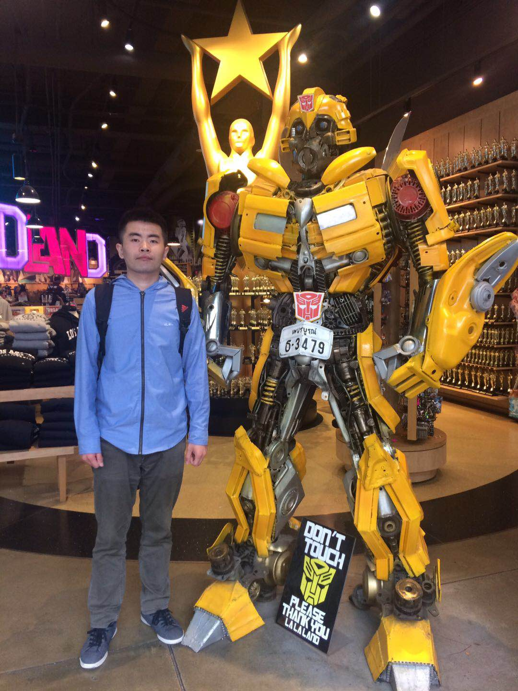

|  | Ke XU许 可 Postdoctoral Researcher City University of Hong Kong Email: kkangwing at gmail dot com |
Ke XU currently works at City University of Hong Kong. He has obtained the dual Ph.D. degrees from Dalian University of Technology and City University of Hong Kong in 2021. He aims to design effective visual perceptual models, to align the camera system of AI agents with the capacity of the human visual system in the wild.
Program Committee Member: CVPR, ICCV, ECCV, NeurIPS, ICML, ICLR, BMVC.
Journal Reviewer: IJCV, TPAMI, TIP.
Best Student Paper Award Runner Up: BMVC 2020.
Top Reviewer: NeurIPS 2019.
Travel Award: NeurIPS 2018.
|
Geometry-aware Two-scale PIFu Representation for Human Reconstruction
Zheng Dong, Ke Xu, Ziheng Duan, Hujun Bao, Weiwei Xu, Rynson Lau Proc. NeurIPS (Spotlight), Nov. 2022 [Paper|Code] |
|
Semantics-Adding Flaw-Erasing Network for Semantic Human Matting
Jiayu Sun, Zhanghan Ke, Ke Xu, Guofeng Zhang, Lihe Zhang, Huchuan Lu, Rynson Lau Proc. BMVC (Oral), Nov. 2022 [Paper|Code] |
|
Weakly-Supervised Salient Object Detection on Light Fields
Zijian Liang, Pengjie Wang, Ke Xu, Pingping Zhang, Rynson Lau IEEE Trans. on Image Processing (TIP), 2022 [Paper] |
|
Harmonizer: Learning to Perform White-Box Image and Video Harmonization
Zhanghan Ke, Chunyi Sun, Lei Zhu, Ke Xu, Rynson Lau Proc. ECCV, Oct. 2022 [Paper|Code|Youtube Demo 1|Demo 2] |
|
Local Color Distributions Prior for Image Enhancement
Haoyuan Wang, Ke Xu*, Rynson Lau Proc. ECCV, Oct. 2022 [Paper|Project] |
|
Mirror Detection with the Visual Chirality Cue
Xin Tan, Jiaying Lin, Ke Xu*, Pan Chen, Lizhuang Ma, Rynson Lau IEEE Trans. on Pattern Analysis and Machine Intelligence (TPAMI), 2022 [Paper] |
|
Bi-directional Object-context Prioritization Learning for Saliency Ranking
Xin Tian, Ke Xu*, Xin Yang, Lin Du, Baocai Yin, Rynson Lau Proc. IEEE CVPR, June 2022 [Paper|Code] |
|
Rethinking Efficient Lane Detection via Curve Modeling
Zhengyang Feng, Shaohua Guo, Xin Tan, Ke Xu*, Min Wang, Lizhuang Ma Proc. IEEE CVPR, June 2022 [Paper|Project] |
|
ISDNet: Integrating Shallow and Deep Networks for Efficient Ultra-high Resolution Segmentation
Shaohua Guo, Liang Liu, Zhenye Gan, Yabiao Wang, Wuhao Zhang, Chengjie Wang, Guannan Jiang, Wei Zhang, Ran Yi, Lizhuang Ma, Ke Xu Proc. IEEE CVPR, June 2022 [Paper|Code] |
|
Learning to Detect Instance-level Salient Objects Using Complementary Image Labels
Xin Tian*, Ke Xu*, Xin Yang, Baocai Yin, Rynson Lau International Journal of Computer Vision (IJCV), 2022 [Paper|Code] |
|
Frequency-aware Camouflaged Object Detection
Jiaying Lin, Xin Tan, Ke Xu, Lizhuang Ma, Rynson Lau ACM Trans. on Multimedia Computing, Communications and Applications (TOMM), 2022 [Paper] |
|
Mirror Segmentation via Semantic-Aware Contextual Contrasted Feature Learning
Haiyang Mei, Letian Yu, Ke Xu, Yang Wang, Xin Yang, Xiaopeng Wei, Rynson Lau ACM Trans. on Multimedia Computing, Communications and Applications (TOMM), 2022 [Paper] |
|
HSNet: Hierarchical Semantics Network for Scene Parsing
Xin Tan, Jiachen Xu, Ying Cao, Ke Xu, Lizhuang Ma, Rynson Lau The Visual Computer, 2022 [Paper] |
|
Night-time Scene Parsing with a Large Real Dataset
Xin Tan, Ke Xu*, Ying Cao, Yiheng Zhang, Lizhuang Ma, Rynson Lau IEEE Trans. on Image Processing (TIP), 2021 [Paper|Project] |
|
Intensity-Aware Single-Image Deraining with Semantic and Color Regularization
Ke Xu, Xin Tian, Xin Yang, Baocai Yin, Rynson Lau IEEE Trans. on Image Processing (TIP), 2021 [Paper|Code] |
|
Mitigating Intensity Bias in Shadow Detection via Feature Decomposition and Reweighting
Lei Zhu, Ke Xu*, Zhanghan Ke, Rynson Lau Proc. IEEE ICCV, Oct. 2021 [Paper|Code] |
|
Location-aware Single Image Reflection Removal
Zheng Dong, Ke Xu, Yin Yang, Hujun Bao, Weiwei Xu, Rynson Lau Proc. IEEE ICCV, Oct. 2021 [Paper|Project] |
|
Weakly-Supervised Salient Instance Detection
Xin Tian, Ke Xu, Xin Yang, Baocai Yin, Rynson Lau Proc. BMVC (Oral), Sept. 2020 [Paper|Code] |
|
Learning to Restore Low-Light Images via Decomposition-and-Enhancement
Ke Xu, Xin Yang, Baocai Yin, Rynson Lau Proc. IEEE CVPR, June 2020 [Paper|Code|Dataset] |